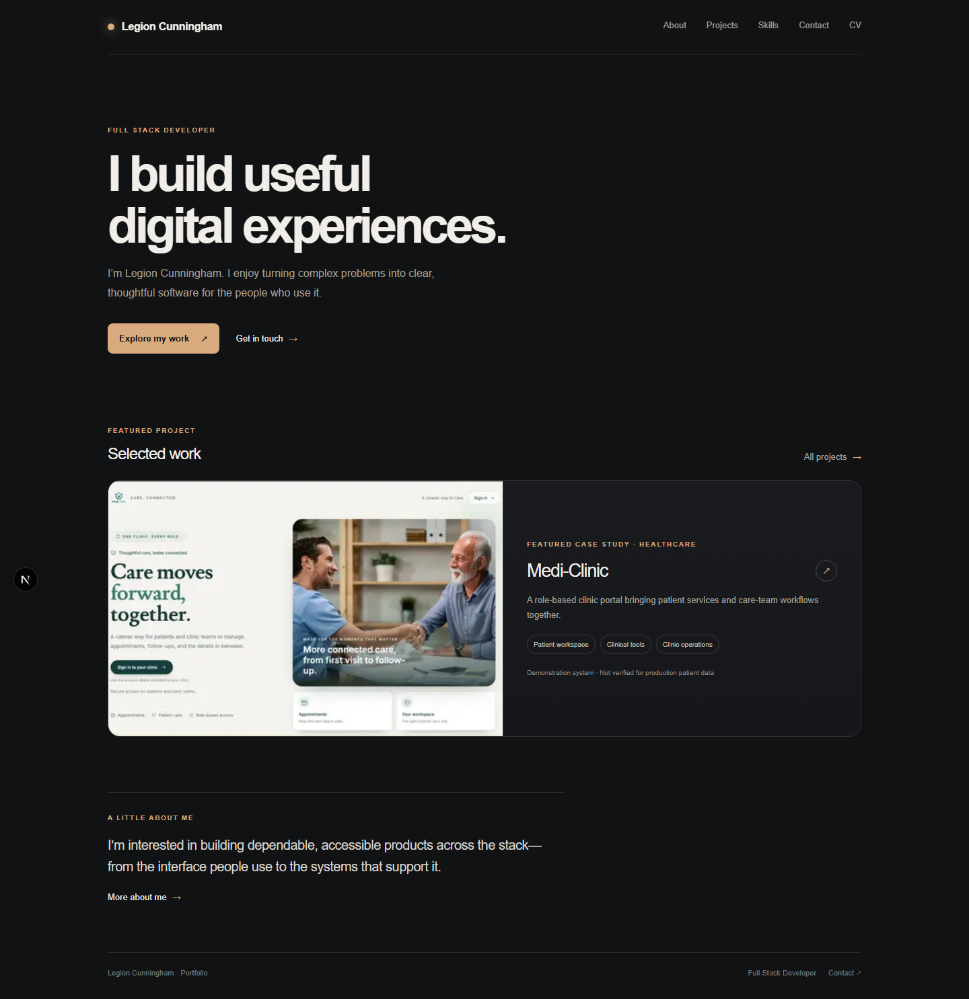
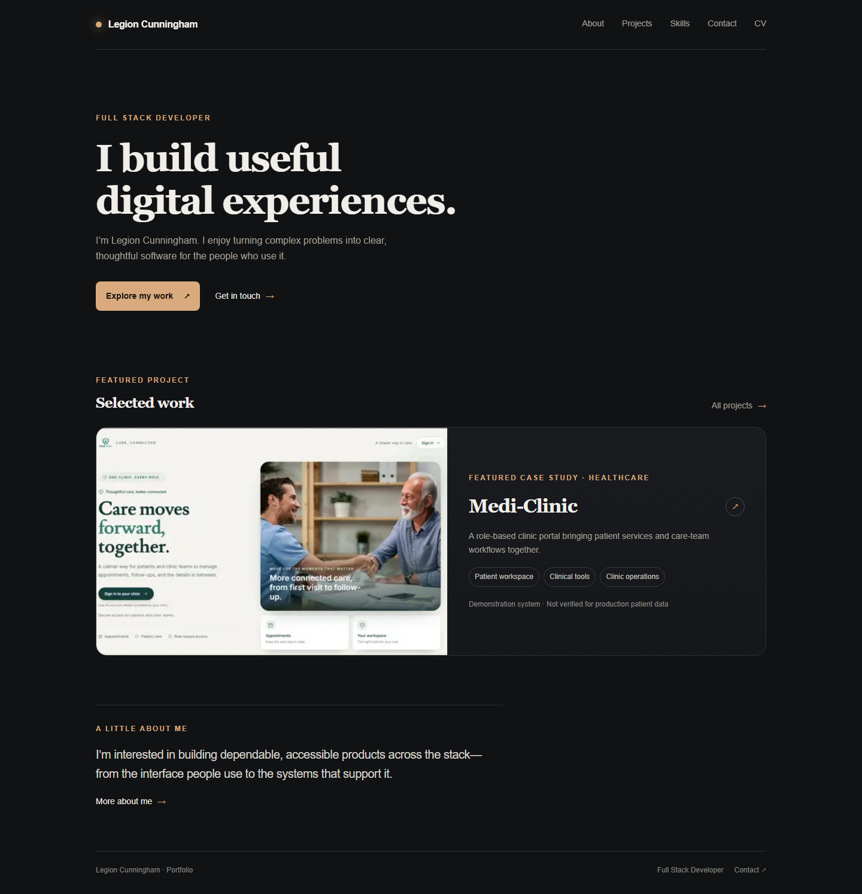

Design score: 79 → 100
This score comes from an evidence-based review of design consistency, accessibility, and responsive behavior across 28 applicable checks.
Before and after


What needed attention
- Small footer text was too faint to meet the standard for comfortable reading.
- Text sizes and boldness varied more than needed, making the hierarchy less consistent.
- Headings and paragraphs used uneven spacing between lines.
- The mobile menu control was slightly smaller than the recommended touch size.
What changed
Color and identity. The charcoal and amber palette remains; muted text is now brighter so small copy is easier to read.
Typography. The Warm Editorial Portfolio direction pairs serif headings with sans-serif body text, uses two weights, and applies a shared nine-step size scale with more even line spacing.
Layout and mobile use. The left-aligned introduction and featured project remain the visual focus. The mobile menu now has a 44-pixel square touch area.
Interaction polish. Existing hover, keyboard focus, reduced-motion, and data feedback states were retained and reviewed.
Verified results
- Sampled text colors pass WCAG AA contrast checks.
- Phone, tablet, and desktop widths show no horizontal overflow.
- The production build completes successfully.
- The final design audit passes all 28 applicable checks.
Coverage: The visual comparison shows the homepage. Shared styles and route source were also reviewed for the other pages.